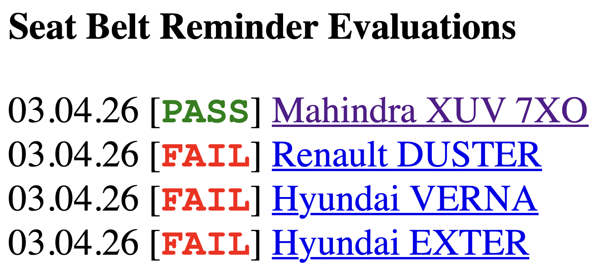

The Yawning Chihuahua
Home | Seat belt reminder evaluation | Twitter | Instagram | YouTube | Legacy website
NOTICE
Seat belt reminder evaluations of XUV 7XO, DUSTER, VERNA and EXTER published
03.04.2026

The rear seat belt reminder (SBR) evaluations of four models have been published today: the Mahindra XUV 7XO, new Renault Duster, and the facelifted Hyundai Verna and Exter.
Only the XUV 7XO receives a PASS result: it has occupant detection (Mahindra PODS) in all rear seats, and issues an audio and visual signal when any rear seatbelt is not fastened on an occupied seat.
The Duster, Verna and Exter receive FAIL results: their rudimentary rear seat belt reminders do not have occupant detection, and only issue an audio signal when a rear seat belt is fastened and then unfastened.
Detailed results are on the SBR evaluations page: click here.
-TYC
click to go back home